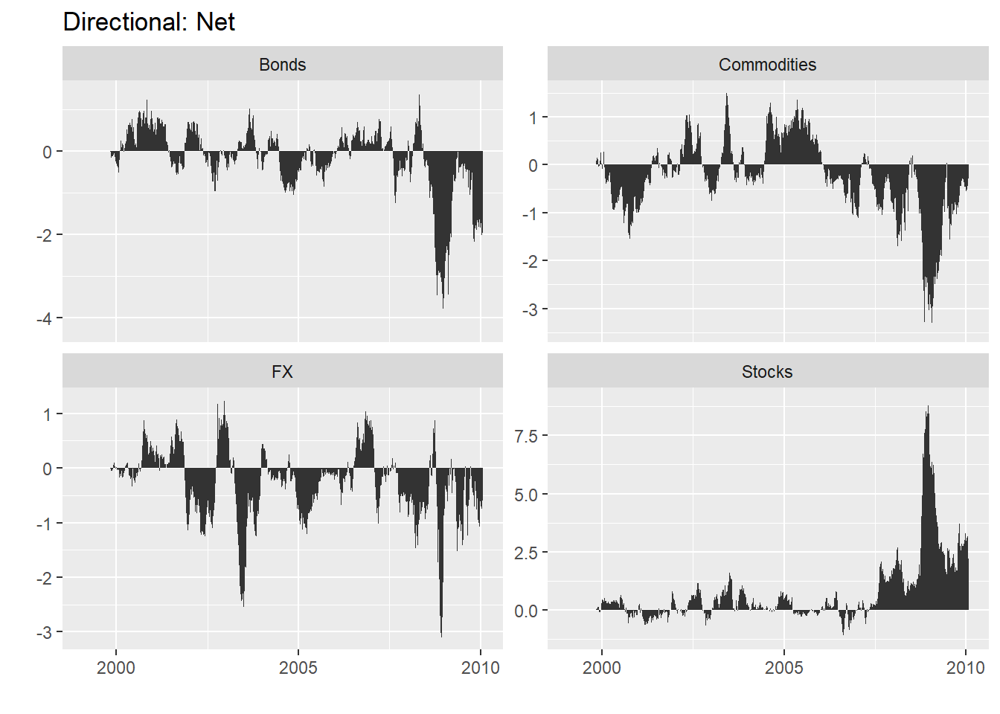
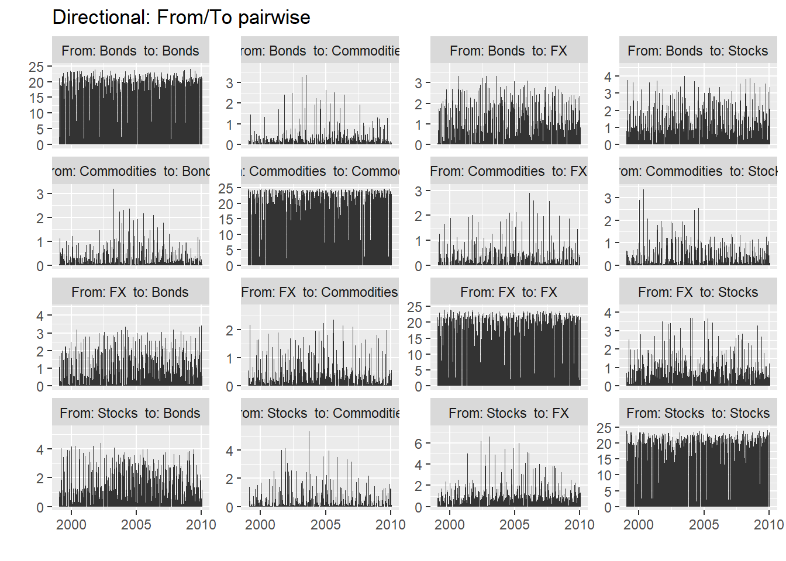

7 Time Series Spillover - GVAR
7.1 Library
library(Spillover)
#> Loading required package: vars
#> Loading required package: MASS
#> Loading required package: strucchange
#> Loading required package: zoo
#>
#> Attaching package: 'zoo'
#> The following objects are masked from 'package:base':
#>
#> as.Date, as.Date.numeric
#> Loading required package: sandwich
#> Loading required package: urca
#> Loading required package: lmtest
library(vars)
library(urca)
library(splitstackshape)
library(igraph)
#>
#> Attaching package: 'igraph'
#> The following objects are masked from 'package:stats':
#>
#> decompose, spectrum
#> The following object is masked from 'package:base':
#>
#> union
library(reshape)7.2 Data: Diebold-Yilmaz 2012
data(dy2012)
head(dy2012) # in log volatility form
#> Date Stocks Bonds Commodities FX
#> 1 1999-01-25 -9.891998 -10.081905 -9.797694 -12.971578
#> 2 1999-01-26 -9.353294 -10.090498 -11.475212 -13.237477
#> 3 1999-01-27 -9.314619 -10.103319 -15.317140 -9.749465
#> 4 1999-01-28 -8.997370 -10.090498 -12.044040 -10.853610
#> 5 1999-01-29 -8.855955 -9.426092 -12.928477 -11.788281
#> 6 1999-02-01 -10.282395 -8.936206 -12.821930 -11.308455log volatility return: \[ \sigma^2_{it} = 0.361[ln(P^{max}_{i,t}) - ln(P^{min}_{i,t-1}))]^2 \]
\[ \sigma_{it} = 100*(\sqrt{252*\sigma^2_{it}}) \]
class(dy2012)
#> [1] "data.frame"
nrow(dy2012)
#> [1] 27717.3 VAR Model
PP.test(dy2012$Stocks)
#>
#> Phillips-Perron Unit Root Test
#>
#> data: dy2012$Stocks
#> Dickey-Fuller = -32.546, Truncation lag parameter =
#> 9, p-value = 0.01
PP.test(dy2012$Bonds)
#>
#> Phillips-Perron Unit Root Test
#>
#> data: dy2012$Bonds
#> Dickey-Fuller = -41.249, Truncation lag parameter =
#> 9, p-value = 0.01
PP.test(dy2012$Commodities)
#>
#> Phillips-Perron Unit Root Test
#>
#> data: dy2012$Commodities
#> Dickey-Fuller = -48.523, Truncation lag parameter =
#> 9, p-value = 0.01
PP.test(dy2012$FX)
#>
#> Phillips-Perron Unit Root Test
#>
#> data: dy2012$FX
#> Dickey-Fuller = -47.527, Truncation lag parameter =
#> 9, p-value = 0.01
# Optimum Lag
VARselect(dy2012[,-1], lag.max = 4, type = c("both"))
#> $selection
#> AIC(n) HQ(n) SC(n) FPE(n)
#> 4 4 4 4
#>
#> $criteria
#> 1 2 3 4
#> AIC(n) -0.11329876 -0.4490460 -0.5882320 -0.6679637
#> HQ(n) -0.09473562 -0.4181074 -0.5449180 -0.6122743
#> SC(n) -0.06190286 -0.3633861 -0.4683083 -0.5137760
#> FPE(n) 0.89288389 0.6382368 0.5553084 0.5127520
# VAR Model
VAR_4 <- VAR(dy2012[,-1], p=4)
VAR_4
#>
#> VAR Estimation Results:
#> =======================
#>
#> Estimated coefficients for equation Stocks:
#> ===========================================
#> Call:
#> Stocks = Stocks.l1 + Bonds.l1 + Commodities.l1 + FX.l1 + Stocks.l2 + Bonds.l2 + Commodities.l2 + FX.l2 + Stocks.l3 + Bonds.l3 + Commodities.l3 + FX.l3 + Stocks.l4 + Bonds.l4 + Commodities.l4 + FX.l4 + const
#>
#> Stocks.l1 Bonds.l1 Commodities.l1 FX.l1
#> 0.1835084630 -0.0242487169 -0.0036337209 0.0219988664
#> Stocks.l2 Bonds.l2 Commodities.l2 FX.l2
#> 0.2741423171 0.0027926328 -0.0108044031 0.0040316592
#> Stocks.l3 Bonds.l3 Commodities.l3 FX.l3
#> 0.2025153665 0.0360740337 -0.0158017651 0.0007938866
#> Stocks.l4 Bonds.l4 Commodities.l4 FX.l4
#> 0.1620506569 0.0333733392 -0.0029608791 -0.0007384703
#> const
#> -1.3401330918
#>
#>
#> Estimated coefficients for equation Bonds:
#> ==========================================
#> Call:
#> Bonds = Stocks.l1 + Bonds.l1 + Commodities.l1 + FX.l1 + Stocks.l2 + Bonds.l2 + Commodities.l2 + FX.l2 + Stocks.l3 + Bonds.l3 + Commodities.l3 + FX.l3 + Stocks.l4 + Bonds.l4 + Commodities.l4 + FX.l4 + const
#>
#> Stocks.l1 Bonds.l1 Commodities.l1 FX.l1
#> 0.068141170 0.163772247 0.052592815 0.004319034
#> Stocks.l2 Bonds.l2 Commodities.l2 FX.l2
#> 0.025511120 0.174716290 0.024936542 0.013962476
#> Stocks.l3 Bonds.l3 Commodities.l3 FX.l3
#> 0.041353468 0.129894730 -0.043136698 0.011844827
#> Stocks.l4 Bonds.l4 Commodities.l4 FX.l4
#> -0.026075514 0.218597337 0.039128430 -0.027491905
#> const
#> -1.080792116
#>
#>
#> Estimated coefficients for equation Commodities:
#> ================================================
#> Call:
#> Commodities = Stocks.l1 + Bonds.l1 + Commodities.l1 + FX.l1 + Stocks.l2 + Bonds.l2 + Commodities.l2 + FX.l2 + Stocks.l3 + Bonds.l3 + Commodities.l3 + FX.l3 + Stocks.l4 + Bonds.l4 + Commodities.l4 + FX.l4 + const
#>
#> Stocks.l1 Bonds.l1 Commodities.l1 FX.l1
#> -0.022755735 0.098201350 0.183333080 0.048298645
#> Stocks.l2 Bonds.l2 Commodities.l2 FX.l2
#> -0.013291588 -0.013132921 0.207410140 0.044188995
#> Stocks.l3 Bonds.l3 Commodities.l3 FX.l3
#> -0.049827512 0.004592325 0.185198136 -0.037523992
#> Stocks.l4 Bonds.l4 Commodities.l4 FX.l4
#> -0.030251601 0.060251069 0.156050483 0.038706445
#> const
#> -1.543777242
#>
#>
#> Estimated coefficients for equation FX:
#> =======================================
#> Call:
#> FX = Stocks.l1 + Bonds.l1 + Commodities.l1 + FX.l1 + Stocks.l2 + Bonds.l2 + Commodities.l2 + FX.l2 + Stocks.l3 + Bonds.l3 + Commodities.l3 + FX.l3 + Stocks.l4 + Bonds.l4 + Commodities.l4 + FX.l4 + const
#>
#> Stocks.l1 Bonds.l1 Commodities.l1 FX.l1
#> 0.06467245 -0.01930672 0.02517504 0.06996402
#> Stocks.l2 Bonds.l2 Commodities.l2 FX.l2
#> 0.03590206 -0.02073267 0.01066279 0.20847309
#> Stocks.l3 Bonds.l3 Commodities.l3 FX.l3
#> -0.01249224 0.03780188 -0.00393800 0.18185464
#> Stocks.l4 Bonds.l4 Commodities.l4 FX.l4
#> -0.01552454 0.05072537 0.01667104 0.11443511
#> const
#> -2.998383367.4 Volatility Spillover DY-2012
# Total Spillover Index
sp <- G.spillover(VAR_4, n.ahead = 10, standardized = F )
sp
#> Stocks Bonds Commodities
#> Stocks 88.757002 7.291185 0.3453279
#> Bonds 10.213545 81.445712 2.7269737
#> Commodities 0.468118 3.695953 93.6941893
#> FX 5.691579 7.026017 1.5477592
#> C. to others (spillover) 16.373241 18.013154 4.6200608
#> C. to others including own 105.130243 99.458866 98.3142500
#> FX C. from others
#> Stocks 3.606486 11.242998
#> Bonds 5.613770 18.554288
#> Commodities 2.141740 6.305811
#> FX 85.734645 14.265355
#> C. to others (spillover) 11.361996 12.592113
#> C. to others including own 97.096641 400.000000The total volatility spillover appears in the lower right corner of Table, which indicates that, on average, across our entire sample, 12.6% of the volatility forecast error variance in all four markets comes from spillovers
Spillover::net(sp)
#> Warning: 'Spillover::net' is deprecated.
#> Use 'dynamic.spillover' instead.
#> See help("Deprecated")
#> To From Net Transmitter
#> Stocks 16.373241 11.242998 5.1302430 TRUE
#> Bonds 18.013154 18.554288 -0.5411342 FALSE
#> Commodities 4.620061 6.305811 -1.6857500 FALSE
#> FX 11.361996 14.265355 -2.9033588 FALSE7.5 Dynamic Spillover Index / rolling-sample total volatility spillover
# Data Setting
data(dy2012)
dy2012$Date <- as.Date(dy2012$Date, "%Y-%m-%d")
dy2012 <- as.zoo(dy2012[,-1], order.by = dy2012$Date)
class(dy2012)
#> [1] "zoo"
# Generalized rolling spillover index based on a VAR(4)
G_index<- total.dynamic.spillover(dy2012, width = 200, index="generalized", p=4)
head(G_index, n=10)
#> 1999-11-05 1999-11-08 1999-11-09 1999-11-10 1999-11-11
#> 13.50622 13.60646 13.16968 13.04980 12.95939
#> 1999-11-12 1999-11-15 1999-11-16 1999-11-17 1999-11-18
#> 12.92011 14.27211 14.04579 13.90963 13.85581
plot(G_index)
7.6 Directional volatility spillovers
dy_results <- dynamic.spillover(dy2012, width=200, remove.own = FALSE)
str(dy_results)
#> List of 5
#> $ from :'data.frame': 2771 obs. of 5 variables:
#> ..$ Date : Factor w/ 2771 levels "1999-01-25","1999-01-26",..: 1 2 3 4 5 6 7 8 9 10 ...
#> ..$ Stocks : num [1:2771] 0 0 0 0 0 0 0 0 0 0 ...
#> ..$ Bonds : num [1:2771] 0 0 0 0 0 0 0 0 0 0 ...
#> ..$ Commodities: num [1:2771] 0 0 0 0 0 0 0 0 0 0 ...
#> ..$ FX : num [1:2771] 0 0 0 0 0 0 0 0 0 0 ...
#> $ to :'data.frame': 2771 obs. of 5 variables:
#> ..$ Date : Factor w/ 2771 levels "1999-01-25","1999-01-26",..: 1 2 3 4 5 6 7 8 9 10 ...
#> ..$ Stocks : num [1:2771] 0 0 0 0 0 0 0 0 0 0 ...
#> ..$ Bonds : num [1:2771] 0 0 0 0 0 0 0 0 0 0 ...
#> ..$ Commodities: num [1:2771] 0 0 0 0 0 0 0 0 0 0 ...
#> ..$ FX : num [1:2771] 0 0 0 0 0 0 0 0 0 0 ...
#> $ net :'data.frame': 2771 obs. of 5 variables:
#> ..$ Date : Factor w/ 2771 levels "1999-01-25","1999-01-26",..: 1 2 3 4 5 6 7 8 9 10 ...
#> ..$ Stocks : num [1:2771] 0 0 0 0 0 0 0 0 0 0 ...
#> ..$ Bonds : num [1:2771] 0 0 0 0 0 0 0 0 0 0 ...
#> ..$ Commodities: num [1:2771] 0 0 0 0 0 0 0 0 0 0 ...
#> ..$ FX : num [1:2771] 0 0 0 0 0 0 0 0 0 0 ...
#> $ net_pairwise :'data.frame': 2771 obs. of 7 variables:
#> ..$ Date : Factor w/ 2771 levels "1999-01-25","1999-01-26",..: 1 2 3 4 5 6 7 8 9 10 ...
#> ..$ Stocks-Bonds : num [1:2771] 0 0 0 0 0 0 0 0 0 0 ...
#> ..$ Stocks-Commodities: num [1:2771] 0 0 0 0 0 0 0 0 0 0 ...
#> ..$ Stocks-FX : num [1:2771] 0 0 0 0 0 0 0 0 0 0 ...
#> ..$ Bonds-Commodities : num [1:2771] 0 0 0 0 0 0 0 0 0 0 ...
#> ..$ Bonds-FX : num [1:2771] 0 0 0 0 0 0 0 0 0 0 ...
#> ..$ Commodities-FX : num [1:2771] 0 0 0 0 0 0 0 0 0 0 ...
#> $ from_to_pairwise:'data.frame': 44336 obs. of 3 variables:
#> ..$ Date : Factor w/ 2771 levels "1999-01-25","1999-01-26",..: 1 2 3 4 5 6 7 8 9 10 ...
#> ..$ variables: chr [1:44336] "From: Stocks to: Stocks" "From: Stocks to: Bonds" "From: Stocks to: Commodities" "From: Stocks to: FX" ...
#> ..$ value : num [1:44336] 0 0 0 0 0 0 0 0 0 0 ...
#> - attr(*, "class")= chr "directional.spillover"
# Directional volatility spillovers, FROM four asset classes.
pp_from <- plotdy(dy_results, direction = "from")
# Directional volatility spillovers, TO four asset classes.
pp_to <- plotdy(dy_results, direction = "to")
# Net volatility spillovers, four asset classes
pp_net <- plotdy(dy_results, direction = "net")
# Net pairwise volatility spillovers
pp_netpairwise <- plotdy(dy_results, direction = "net_pairwise")
pp_from_to_pairwise <- plotdy(dy_results, direction = "from_to_pairwise")
7.7 Connectedness Network
sp <- G.spillover(VAR_4, n.ahead = 10, standardized = F )
datanet <- Spillover::net(sp)
#> Warning: 'Spillover::net' is deprecated.
#> Use 'dynamic.spillover' instead.
#> See help("Deprecated")
datanet
#> To From Net Transmitter
#> Stocks 16.373241 11.242998 5.1302430 TRUE
#> Bonds 18.013154 18.554288 -0.5411342 FALSE
#> Commodities 4.620061 6.305811 -1.6857500 FALSE
#> FX 11.361996 14.265355 -2.9033588 FALSE
# Data frame node
node_df <- data.frame(rownames(datanet), rownames(datanet),datanet$Net)
names(node_df) <- c("id","label","size")
head(node_df)
#> id label size
#> 1 Stocks Stocks 5.1302430
#> 2 Bonds Bonds -0.5411342
#> 3 Commodities Commodities -1.6857500
#> 4 FX FX -2.9033588
sp <- sp[1:4,1:4]
sp
#> Stocks Bonds Commodities FX
#> Stocks 88.757002 7.291185 0.3453279 3.606486
#> Bonds 10.213545 81.445712 2.7269737 5.613770
#> Commodities 0.468118 3.695953 93.6941893 2.141740
#> FX 5.691579 7.026017 1.5477592 85.734645
# Data frame edge
m1 <- melt(sp)[melt(upper.tri(sp))$value,] # FROM
m2 <- melt(sp)[melt(lower.tri(sp))$value,] # TO
m1 <- m1[order(m1$X1),]
m2 <- m2[order(m2$X2),]
edge_df <- data.frame("to"=m1[,2],"from"=m1[,1], "weight" = m1$value-m2$value)
library(dplyr)
#> Warning: package 'dplyr' was built under R version 4.2.3
#>
#> Attaching package: 'dplyr'
#> The following object is masked from 'package:reshape':
#>
#> rename
#> The following objects are masked from 'package:igraph':
#>
#> as_data_frame, groups, union
#> The following object is masked from 'package:MASS':
#>
#> select
#> The following objects are masked from 'package:stats':
#>
#> filter, lag
#> The following objects are masked from 'package:base':
#>
#> intersect, setdiff, setequal, union
edge_df_positive <- edge_df %>% filter(weight >= 0)
edge_df_negative <- edge_df %>% filter(weight < 0)
edge_df_negative <- edge_df_negative %>%
mutate(weight = -weight) %>%
dplyr::rename(to = from, from = to)
edge_df <- bind_rows(edge_df_positive, edge_df_negative)
positive_weight <- edge_df$weight[edge_df$weight > 0]
negative_weight <- edge_df$weight[edge_df$weight < 0]
positive_size <- node_df$size[node_df$size > 0]
negative_size <- node_df$size[node_df$size < 0]
library(RColorBrewer)
Transmitter_color <- "#2ca25f"
else_color <- "#de2d26"
color_vec1 <- ifelse(edge_df$weight > 0, Transmitter_color, else_color)
color_vec2 <- ifelse(node_df$size > 0, Transmitter_color, else_color)
graph <- graph_from_data_frame(edge_df, directed = TRUE, vertices = node_df)
E(graph)$color <- "black" # Egde
V(graph)$color <- color_vec2 # Node
E(graph)$weight <- abs(edge_df$weight)
V(graph)$size <- abs(node_df$size)
E(graph)$weight <- E(graph)$weight / max(E(graph)$weight) * 2
V(graph)$size <- V(graph)$size / max(V(graph)$size) * 50
plot(graph, edge.width = E(graph)$weight, layout=layout_in_circle(graph), edge.arrow.mode=2, edge.arrow.size=0.2)